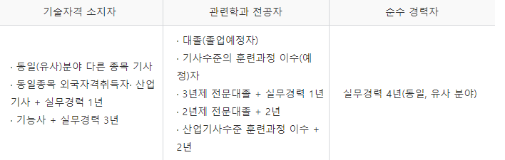
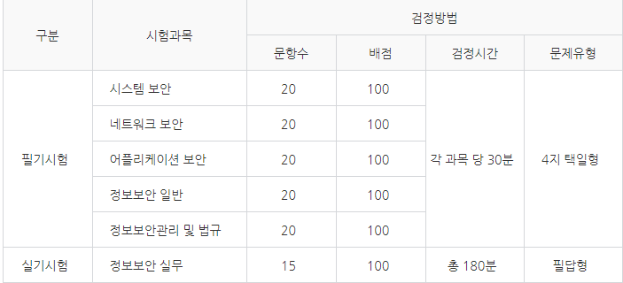

정보보안기사 응시자격

- 위와 같이 정보보안기사 또한 정보처리기사와 같이 응시자격은 동일하다. 처리기사와 같이 응시자격은 관련학과가 의미가 없고 4학년이면 볼 수 있다.
시험과목 및 시험기간

- 위의 사진은 시험과목 및 시험기간이다. 합격기준은 필기 100점 만점으로 과목당 40점이상 , 전 과목 평균 60점 이상 이며 실기는 100점 만점으로 60점 이상이여야한다.
- 또한 필기시험에 합격한 자에 대하여는 필기시험 합격자 발표일로부터 2년간 필기시험을 면제한다.
정보보안기사의 활용도에 대하여
- 정보보안전문가로써의 직업군에는 보안솔루션 개발자, 모의해킹전문가(보안분석), 악성코드분석전문가, 보안관리자(관제전문가), 침해대응전문가(CERT), 보안컨설턴트 등 다양한 분야로 활동하고 있다.
- 취업으로서 정보보안 분야의 경우 CISA, CISSP, 정보보안기사 중 1개 이상의 자격사항을 갖춘 자로서 일정한 기간 이상의 정보보안업무 경력을 갖춘 자를 선발하거나 우대한다.
정보보안기사에 대한 기타사항
- 정보보안기사는 정보처리기사와는 다르게 난이도가 차원이 다르다고 한다. 필기에 응시하는건 각 회당 4500여명이지만 실기에 합격에는 150명에 불과한다고한다. 정보처리기사 보다 더욱 전문적이고 심화된 내용을 다루기에 더 합격률이 낮고 실기 시험은 극한에 이룬다고한다.